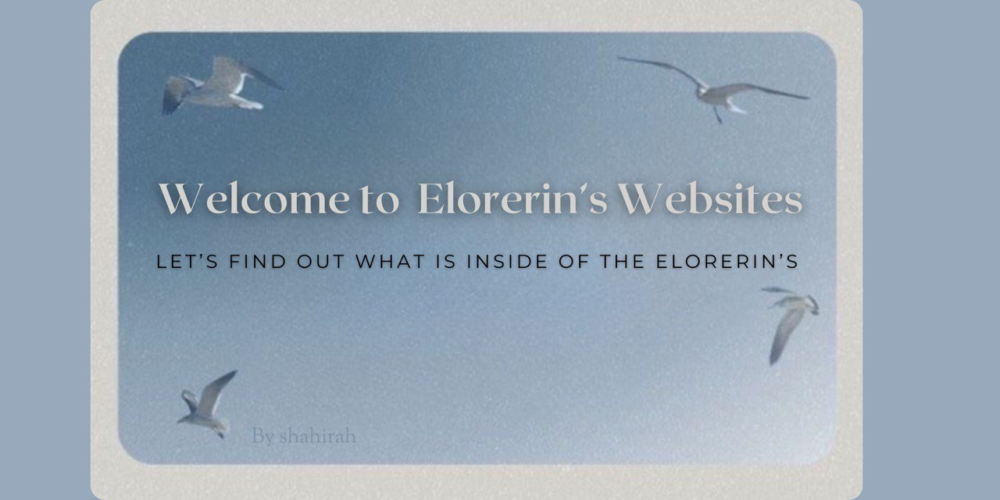

|  |
Hi there!
Welcome to this little corner of my world! Here, I share my passions, favorites, and the moments that matter most. This website is a collection of everything I hold dear and wish to share with you.
Created with love and creativity, this space reflects who I am. I am Nurshahirah from KCDIM1444A, and this website is a glimpse into my journey and the things I treasure most.
Feel free to explore the following pages to get to know me better:
| Page | Description |
|---|---|
| About Me | A peek into my story and journey. |
| Interests | Things I'm passionate about. |
| Favorites | Songs, books, and other things I love. |
| Family | The special people who support and inspire me. |
| Friends | The amazing friends who bring joy to my life. |
| Gallery | My collection of favorite moments captured. |
This website isn’t just about me—it’s about connection, sharing, and the joy of discovering the little things that make life meaningful. I hope you find something here that resonates with you or simply brings a smile to your face!
Thank you for stopping by, and happy exploring!